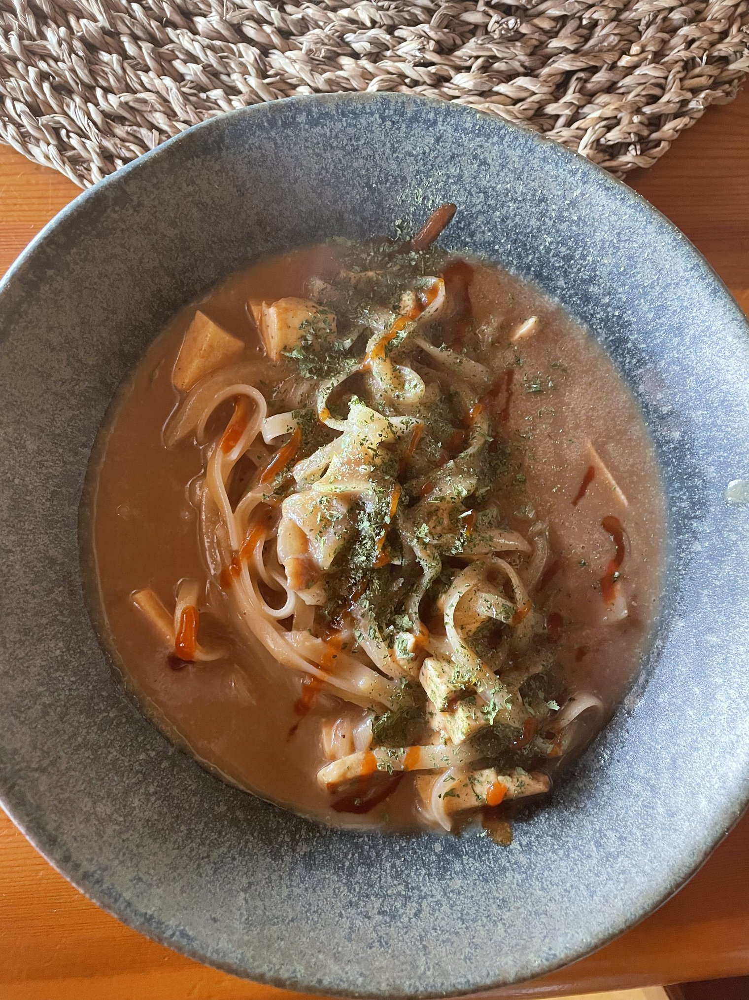

Sopa de fideos de arroz con tofu
Ingredients
2×
- 1 cebolla
- 100 g de setas
- aceite
- 1 l de caldo de verduras
- 1 cda de miso
- 1 cda de crema de cacahuete
- 150 g de tofu
- 150 g de fideos de arroz planos
- sriracha
- alga nori en copos

Preparación
Paso 1
Rehogar 1 cebolla y 100 g de setas en tiras con un poco de aceite.
Paso 2
Añadir 1 l de caldo de verduras, 1 cda de miso y 1 cda de crema de cacahuete, y llevar a ebullición. Añadir 150 g de tofu en dados.
Paso 3
Cocer 150 g de fideos de arroz planos en el caldo según el paquete.
Paso 4
Servir con sriracha por encima y alga nori en copos.